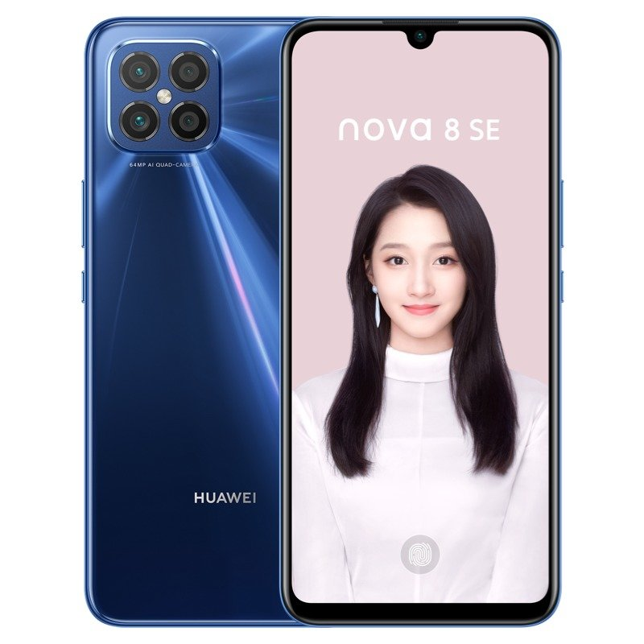
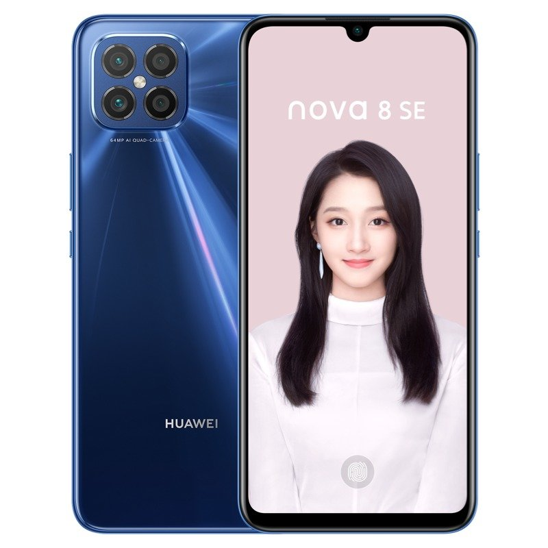
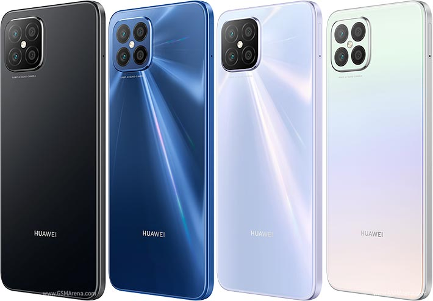

Huawei Nova 8 SE smartphone was launched on 5th November 2020. The phone comes with a 6.53-inch touchscreen display with a resolution of 1080x2400 pixels. Huawei Nova 8 SE is powered by an octa-core MediaTek Dimensity 720 processor. It comes with 8GB of RAM. The Huawei Nova 8 SE runs Android 10 and is powered by a 3800mAh battery. The Huawei Nova 8 SE supports proprietary fast charging.As far as the cameras are concerned, the Huawei Nova 8 SE on the rear packs a 68-megapixel primary camera with an f/1.9 aperture; a second 8-megapixel camera with an f/2.4 aperture; a third 2-megapixel camera with an f/2.4 aperture and a fourth 2-megapixel camera with an f/2.4 aperture. The rear camera setup has autofocus. It sports a 16-megapixel camera on the front for selfies, with an f/2.0 aperture.
| Brand | HUAWEI |
|---|---|
| Model | Nova 8 SE |
| Release Date | 5th November 2020 |
| Dimensions (mm) | 161.60 x 74.80 x 7.46 |
| Weight (g) | 178.00 |
| Battery Capacity (mAh) | 3800 |
| Touchscreen | Yes |
| Colours | Deep Sea Blue, Magic Night Black, Silver Moon Stars, Sakura Snow Clear Sky |
| Resolution | 1080x2400 pixels |
| Screen Size (inches) | 6.53 |
| RAM | 8GB |
| Internal Storage | 128GB |
| Price | R 10,700.00 |
| Stock Availibility | In Stock |